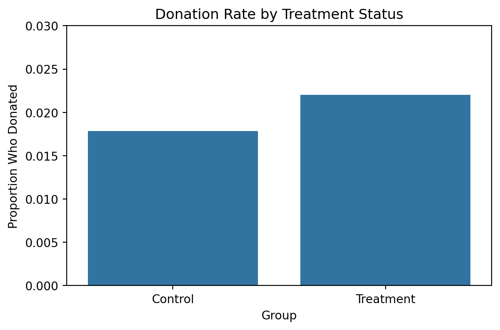
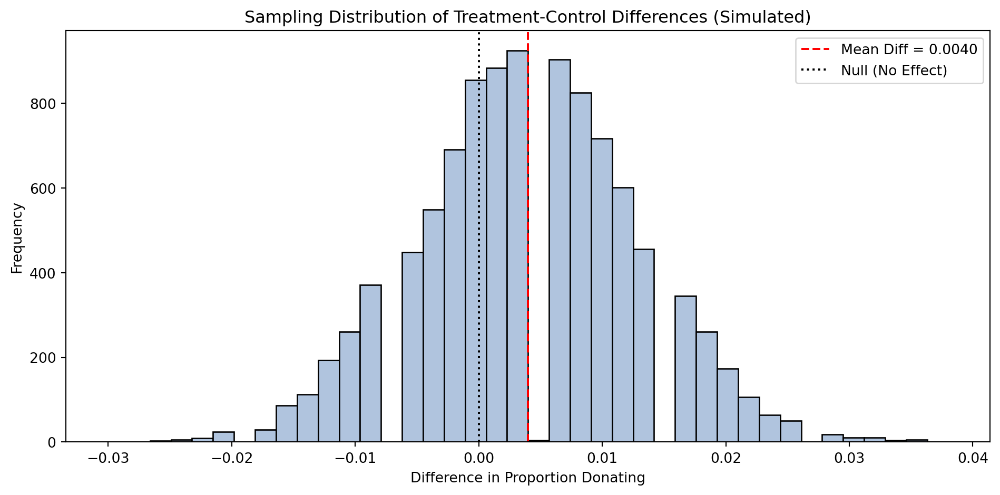
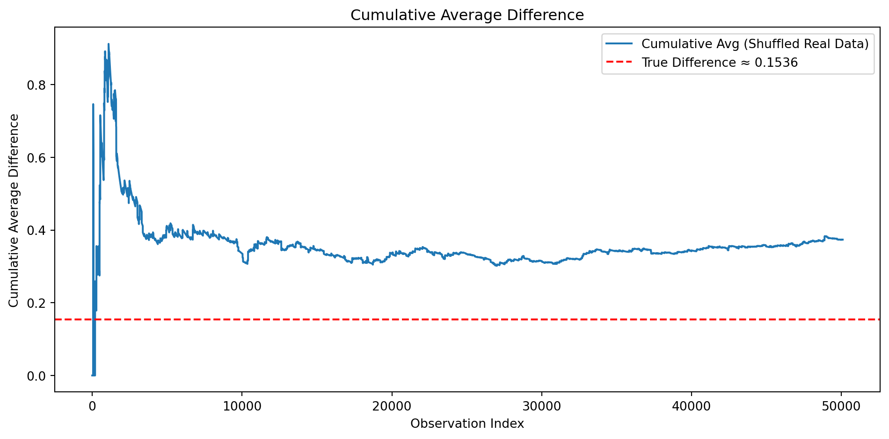
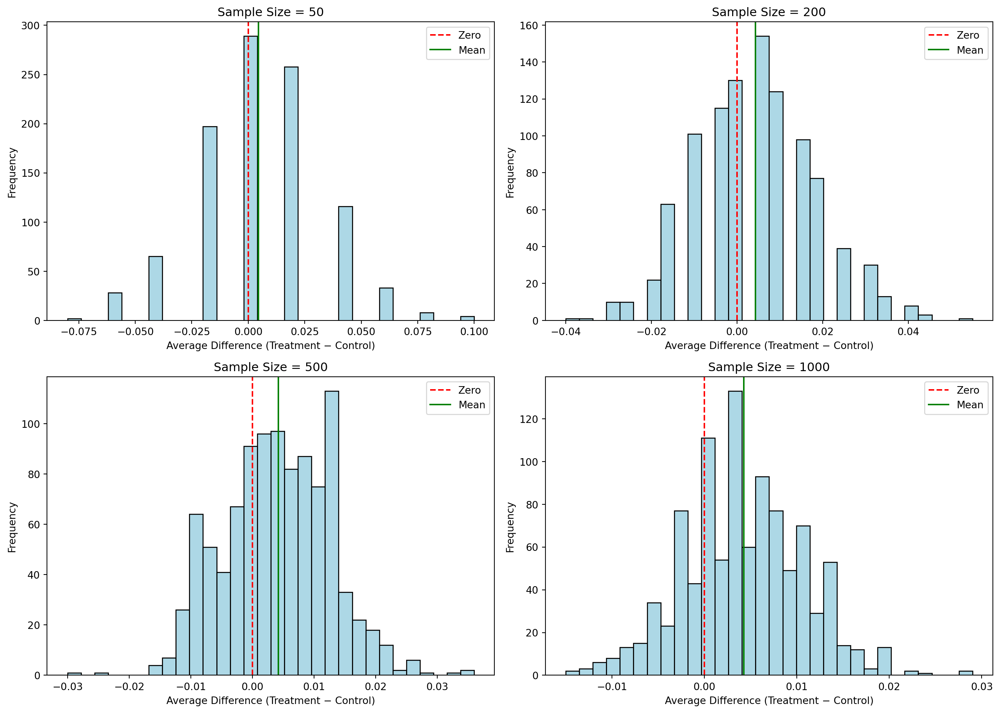

Dean Karlan at Yale and John List at the University of Chicago conducted a field experiment to test the effectiveness of different fundraising letters. They sent out 50,000 fundraising letters to potential donors, randomly assigning each letter to one of three treatments: a standard letter, a matching grant letter, or a challenge grant letter. They published the results of this experiment in the American Economic Review in 2007. The article and supporting data are available from the AEA website and from Innovations for Poverty Action as part of Harvard’s Dataverse.
Description of the Experiment
In their 2007 paper published in the American Economic Review, Karlan and List conducted a large-scale natural field experiment to investigate how matching donations affect charitable giving. They sent over 50,000 direct mail solicitations to previous donors of a U.S. nonprofit organization. Individuals were randomly assigned to either a control group, which received a standard fundraising appeal, or a treatment group, which received a matching donation offer.
Within the treatment group, participants were further randomized into subgroups based on: - Match ratio: $1:$1, $2:$1, or $3:$1 - Maximum match size: $25,000, $50,000, $100,000, or unstated - Suggested ask amount: equal to, 1.25×, or 1.5× the highest previous contribution
The purpose of this experiment was to assess whether the size or presence of a match increases the likelihood or amount of giving. Randomization ensures that any observed differences in outcomes can be causally attributed to the treatment.
Data Overview
We begin by loading and exploring the structure of the dataset. The dataset includes 50,083 observations and 51 variables, covering treatment assignments, donor demographics, giving behavior, and geographic information.
Data
import pandas as pddf = pd.read_stata("karlan_list_2007.dta")df.head()
treatment
control
ratio
ratio2
ratio3
size
size25
size50
size100
sizeno
...
redcty
bluecty
pwhite
pblack
page18_39
ave_hh_sz
median_hhincome
powner
psch_atlstba
pop_propurban
0
0
1
Control
0
0
Control
0
0
0
0
...
0.0
1.0
0.446493
0.527769
0.317591
2.10
28517.0
0.499807
0.324528
1.0
1
0
1
Control
0
0
Control
0
0
0
0
...
1.0
0.0
NaN
NaN
NaN
NaN
NaN
NaN
NaN
NaN
2
1
0
1
0
0
$100,000
0
0
1
0
...
0.0
1.0
0.935706
0.011948
0.276128
2.48
51175.0
0.721941
0.192668
1.0
3
1
0
1
0
0
Unstated
0
0
0
1
...
1.0
0.0
0.888331
0.010760
0.279412
2.65
79269.0
0.920431
0.412142
1.0
4
1
0
1
0
0
$50,000
0
1
0
0
...
0.0
1.0
0.759014
0.127421
0.442389
1.85
40908.0
0.416072
0.439965
1.0
5 rows × 51 columns
Description
Variable Definitions
Variable
Description
treatment
Treatment
control
Control
ratio
Match ratio
ratio2
2:1 match ratio
ratio3
3:1 match ratio
size
Match threshold
size25
$25,000 match threshold
size50
$50,000 match threshold
size100
$100,000 match threshold
sizeno
Unstated match threshold
ask
Suggested donation amount
askd1
Suggested donation was highest previous contribution
askd2
Suggested donation was 1.25 x highest previous contribution
askd3
Suggested donation was 1.50 x highest previous contribution
ask1
Highest previous contribution (for suggestion)
ask2
1.25 x highest previous contribution (for suggestion)
ask3
1.50 x highest previous contribution (for suggestion)
amount
Dollars given
gave
Gave anything
amountchange
Change in amount given
hpa
Highest previous contribution
ltmedmra
Small prior donor: last gift was less than median $35
freq
Number of prior donations
years
Number of years since initial donation
year5
At least 5 years since initial donation
mrm2
Number of months since last donation
dormant
Already donated in 2005
female
Female
couple
Couple
state50one
State tag: 1 for one observation of each of 50 states; 0 otherwise
nonlit
Nonlitigation
cases
Court cases from state in 2004-5 in which organization was involved
statecnt
Percent of sample from state
stateresponse
Proportion of sample from the state who gave
stateresponset
Proportion of treated sample from the state who gave
stateresponsec
Proportion of control sample from the state who gave
stateresponsetminc
stateresponset - stateresponsec
perbush
State vote share for Bush
close25
State vote share for Bush between 47.5% and 52.5%
red0
Red state
blue0
Blue state
redcty
Red county
bluecty
Blue county
pwhite
Proportion white within zip code
pblack
Proportion black within zip code
page18_39
Proportion age 18-39 within zip code
ave_hh_sz
Average household size within zip code
median_hhincome
Median household income within zip code
powner
Proportion house owner within zip code
psch_atlstba
Proportion who finished college within zip code
pop_propurban
Proportion of population urban within zip code
# Basic treatment/control breakdownprint("Unique match ratios:", df["ratio"].unique())print("Treatment group size:", df[df["treatment"] ==1].shape[0])print("Control group size:", df[df["treatment"] ==0].shape[0])
Unique match ratios: ['Control', 1, 2, 3]
Categories (4, object): ['Control' < 1 < 2 < 3]
Treatment group size: 33396
Control group size: 16687
# Summary statistics: mean donation rate and average donation by groupsummary = df.groupby("treatment")[["gave", "amount"]].agg(['mean', 'count']).round(4)summary
gave
amount
mean
count
mean
count
treatment
0
0.0179
16687
0.8133
16687
1
0.0220
33396
0.9669
33396
Balance Test
As an ad hoc test of the randomization mechanism, I provide a series of tests that compare aspects of the treatment and control groups to assess whether they are statistically significantly different from one another.
Experimental Results
Charitable Contribution Made
from scipy.stats import ttest_indimport statsmodels.formula.api as smfdef balance_test(var): subset = df[['treatment', var]].dropna()# T-test treated = subset[subset['treatment'] ==1][var] control = subset[subset['treatment'] ==0][var] t_stat, p_val = ttest_ind(treated, control, equal_var=False)print(f"\nT-test for {var}: t = {t_stat:.3f}, p = {p_val:.4f}")# Linear regression model = smf.ols(f'{var} ~ treatment', data=subset).fit()print(model.summary().tables[1]) # Coefficient table# Run for selected baseline variablesfor var in ['mrm2', 'years', 'freq', 'female']: balance_test(var)
T-test for mrm2: t = 0.120, p = 0.9049
==============================================================================
coef std err t P>|t| [0.025 0.975]
------------------------------------------------------------------------------
Intercept 12.9981 0.094 138.979 0.000 12.815 13.181
treatment 0.0137 0.115 0.119 0.905 -0.211 0.238
==============================================================================
T-test for years: t = -1.091, p = 0.2753
==============================================================================
coef std err t P>|t| [0.025 0.975]
------------------------------------------------------------------------------
Intercept 6.1359 0.043 144.023 0.000 6.052 6.219
treatment -0.0575 0.052 -1.103 0.270 -0.160 0.045
==============================================================================
T-test for freq: t = -0.111, p = 0.9117
==============================================================================
coef std err t P>|t| [0.025 0.975]
------------------------------------------------------------------------------
Intercept 8.0473 0.088 91.231 0.000 7.874 8.220
treatment -0.0120 0.108 -0.111 0.912 -0.224 0.200
==============================================================================
T-test for female: t = -1.754, p = 0.0795
==============================================================================
coef std err t P>|t| [0.025 0.975]
------------------------------------------------------------------------------
Intercept 0.2827 0.004 80.688 0.000 0.276 0.290
treatment -0.0075 0.004 -1.758 0.079 -0.016 0.001
==============================================================================
To evaluate whether the randomization process produced balanced groups, we compared key pre-treatment characteristics between the treatment and control groups using both t-tests and bivariate linear regressions. The variables examined included:
• mrm2 (months since last donation)
• years (since first donation)
• freq (number of past donations)
• female (gender)
In all cases, the p-values from both methods exceeded 0.05, indicating that none of the differences were statistically significant. This means the treatment and control groups were well-balanced across these characteristics, just as Table 1 in Karlan & List (2007) demonstrates.
This validation is crucial for the study’s internal validity, it confirms that differences in outcomes can be attributed to the treatment, not to pre-existing differences in donor behavior or demographics.
from scipy.stats import ttest_ind import statsmodels.api as sm import statsmodels.formula.api as smf
# Drop NA for mrm2balance_df = df[['treatment', 'mrm2']].dropna()# T-TESTtreated = balance_df[balance_df['treatment'] ==1]['mrm2']control = balance_df[balance_df['treatment'] ==0]['mrm2']t_stat, p_val = ttest_ind(treated, control, equal_var=False)print(f"T-test for mrm2: t = {t_stat:.3f}, p = {p_val:.4f}")# LINEAR REGRESSION model = smf.ols('mrm2 ~ treatment', data=balance_df).fit()print(model.summary().tables[1]) # Show only coefficient table
T-test for mrm2: t = 0.120, p = 0.9049
==============================================================================
coef std err t P>|t| [0.025 0.975]
------------------------------------------------------------------------------
Intercept 12.9981 0.094 138.979 0.000 12.815 13.181
treatment 0.0137 0.115 0.119 0.905 -0.211 0.238
==============================================================================
To assess whether the treatment and control groups were statistically different before the intervention, we performed a balance test on the variable mrm2, which measures the number of months since the last donation.
A t-test comparing the mean mrm2 between groups yielded a t-statistic of 0.120 and a p-value of 0.9049, indicating no statistically significant difference between the groups.
We also ran a linear regression of mrm2 on the treatment indicator. The estimated coefficient on treatment was 0.0137, with a p-value of 0.905 and a 95% confidence interval ranging from −0.211 to 0.238. These results confirm the same conclusion: the treatment group and control group had nearly identical values for this variable prior to the intervention.
This finding supports the integrity of the random assignment in the experiment. Since there are no significant differences in months since last donation, we can be confident that any observed differences in donation behavior after treatment are not due to baseline imbalances. This type of balance check is crucial for ensuring the internal validity of experimental results and mirrors the intent of Table 1 in Karlan & List (2007).
def run_balance_test(var): subset = df[['treatment', var]].dropna()# T-test treated = subset[subset['treatment'] ==1][var] control = subset[subset['treatment'] ==0][var] t_stat, p_val = ttest_ind(treated, control, equal_var=False)print(f"\nT-test for {var}: t = {t_stat:.3f}, p = {p_val:.4f}")# Regression model = smf.ols(f'{var} ~ treatment', data=subset).fit()print(model.summary().tables[1]) # Coefficient summary only# Run tests for mrm2, years, freq, and femalefor variable in ['mrm2', 'years', 'freq', 'female']: run_balance_test(variable)
T-test for mrm2: t = 0.120, p = 0.9049
==============================================================================
coef std err t P>|t| [0.025 0.975]
------------------------------------------------------------------------------
Intercept 12.9981 0.094 138.979 0.000 12.815 13.181
treatment 0.0137 0.115 0.119 0.905 -0.211 0.238
==============================================================================
T-test for years: t = -1.091, p = 0.2753
==============================================================================
coef std err t P>|t| [0.025 0.975]
------------------------------------------------------------------------------
Intercept 6.1359 0.043 144.023 0.000 6.052 6.219
treatment -0.0575 0.052 -1.103 0.270 -0.160 0.045
==============================================================================
T-test for freq: t = -0.111, p = 0.9117
==============================================================================
coef std err t P>|t| [0.025 0.975]
------------------------------------------------------------------------------
Intercept 8.0473 0.088 91.231 0.000 7.874 8.220
treatment -0.0120 0.108 -0.111 0.912 -0.224 0.200
==============================================================================
T-test for female: t = -1.754, p = 0.0795
==============================================================================
coef std err t P>|t| [0.025 0.975]
------------------------------------------------------------------------------
Intercept 0.2827 0.004 80.688 0.000 0.276 0.290
treatment -0.0075 0.004 -1.758 0.079 -0.016 0.001
==============================================================================
To verify the success of the randomization procedure, we conducted balance tests on four key pre-treatment variables:
• mrm2 (months since last donation)
• years (years since first donation)
• freq (number of prior donations)
• female (gender indicator)
For each variable, we conducted both a t-test and a bivariate linear regression of the variable on the treatment indicator. The results from both methods were consistent and are summarized below:
• mrm2: The t-test returned a p-value of 0.905, and the regression coefficient on treatment was 0.0137. There is no evidence of a difference between groups on months since last donation.
• years: The p-value was 0.275 in the t-test and 0.270 in the regression, with a treatment coefficient of −0.0575. Again, no significant difference.
• freq: The p-value was 0.912 and the treatment coefficient was −0.0120, indicating complete balance in the number of prior donations.
• female: This variable had a slightly lower p-value of 0.079 and a treatment coefficient of −0.0075. While not statistically significant at the 5% level, it is closer to the threshold, suggesting a small imbalance that is worth noting, though likely not practically important.
Overall, these tests show that treatment and control groups were well-balanced across observable characteristics prior to the intervention. These results validate the success of the randomization procedure, ensuring that post-treatment differences in outcomes can be interpreted as causal effects of the matching donation treatment. This approach follows the same logic as Table 1 in Karlan & List (2007), which is used to demonstrate the internal validity of their experimental design.
First, I analyze whether matched donations lead to an increased response rate of making a donation.
Barplot of Donation Rate (Treatment vs Control)
import matplotlib.pyplot as pltimport seaborn as sns# Calculate response ratedonation_rate = df.groupby("treatment")["gave"].mean().reset_index()donation_rate["Group"] = donation_rate["treatment"].map({0: "Control", 1: "Treatment"})# Plotplt.figure(figsize=(6,4))sns.barplot(data=donation_rate, x="Group", y="gave", errorbar=None)plt.title("Donation Rate by Treatment Status")plt.ylabel("Proportion Who Donated")plt.xlabel("Group")plt.ylim(0, 0.03)plt.tight_layout()plt.show()

The barplot above compares the proportion of individuals who donated in the treatment group (offered a matching donation) and the control group (not offered a match).
• The control group had a donation rate of approximately 1.8%
• The treatment group had a slightly higher donation rate of approximately 2.2%
This visual illustrates a modest but meaningful difference in response rates. The treatment group was more likely to donate, consistent with the results from the t-test and regression analysis, both of which showed that this difference is statistically significant at the 1% level.
While the absolute increase of around 0.4 percentage points may seem small, it represents a 22% relative increase in donation likelihood, a substantial behavioral shift from a simple intervention. This reinforces the broader conclusion that framing a donation as being matched can increase participation, even without changing the donation amount given.
from scipy.stats import ttest_ind import statsmodels.formula.api as smf
# T-TESTcontrol = df[df['treatment'] ==0]['gave']treatment = df[df['treatment'] ==1]['gave']t_stat, p_val = ttest_ind(treatment, control, equal_var=False)print(f"T-test result: t = {t_stat:.3f}, p = {p_val:.4f}")# BIVARIATE REGRESSION model = smf.ols('gave ~ treatment', data=df).fit()print(model.summary().tables[1]) # Show coefficient table
To determine whether the matching donation treatment increased the probability of giving, we compared the donation rates of the treatment and control groups using both a t-test and a bivariate linear regression.
The t-test found a statistically significant difference in donation rates (t = 3.209, p = 0.0013), indicating that the treatment and control groups do not have the same underlying probability of donating.
The regression model estimates that being assigned to the treatment group increases the probability of giving by 0.42 percentage points (coef = 0.0042, p = 0.002), and this effect is statistically significant at the 1% level.
The intercept of the model is 0.0179, which represents the average donation rate in the control group (1.79%). The treatment effect raises this to approximately 2.21%, closely matching the observed values in the raw data.
These results confirm that the difference in donation rates between the treatment and control groups is not due to random chance. The findings suggest that even a small behavioral nudge.For example being told a donation will be matched, can have a statistically significant impact on charitable behavior. While the absolute increase is modest, the result is highly robust and consistent across methods.
Probit Regression
import statsmodels.api as sm# Prepare the dataprobit_df = df[['gave', 'treatment']].dropna()X = sm.add_constant(probit_df['treatment']) # add intercepty = probit_df['gave']# Run Probit modelprobit_model = sm.Probit(y, X).fit()print(probit_model.summary())# Compute average marginal effects (AME)marginal_effects = probit_model.get_margeff(at='overall')print(marginal_effects.summary())
We used a Probit regression to estimate the effect of being assigned to the treatment group (offered a matching donation) on the probability of making a charitable contribution. The model includes a single explanatory variable: treatment, where 1 indicates assignment to the treatment group and 0 to the control group.
The estimated coefficient on the treatment variable is 0.0868 (p = 0.002), indicating a positive and statistically significant effect on the latent propensity to donate. While probit coefficients are not directly interpretable in probability terms, we compute the average marginal effect to understand the real-world impact.
The marginal effect of treatment is 0.0043, or 0.43 percentage points, meaning that being assigned to the treatment group increased the probability of donating by about 0.43 percentage points, on average. This result is statistically significant at the 1% level.
The log-likelihood improved from -5035.4 (null model) to -5030.5, and the likelihood ratio test confirms that the treatment variable contributes meaningfully to the model (p = 0.0017).
These results align with earlier linear probability model (OLS) and t-test findings, reinforcing the conclusion that matching offers increase the likelihood of giving, even if the effect is modest in size. The consistency across model types strengthens the evidence that behavioral nudges like matching can shift donation behavior in a measurable and statistically robust way.
Differences between Match Rates
Next, I assess the effectiveness of different sizes of matched donations on the response rate.
from scipy.stats import ttest_ind# Filter treatment group onlytreat_only = df[df['treatment'] ==1].copy()# Ensure ratio is numerictreat_only['ratio'] = pd.to_numeric(treat_only['ratio'], errors='coerce')# Extract 'gave' for each groupgave_r1 = treat_only[treat_only['ratio'] ==1]['gave']gave_r2 = treat_only[treat_only['ratio'] ==2]['gave']gave_r3 = treat_only[treat_only['ratio'] ==3]['gave']# Run t-tests_, pval_12 = ttest_ind(gave_r1, gave_r2, equal_var=False)_, pval_13 = ttest_ind(gave_r1, gave_r3, equal_var=False)print(f"p-value (2:1 vs 1:1): {pval_12:.4f}")print(f"p-value (3:1 vs 1:1): {pval_13:.4f}")
p-value (2:1 vs 1:1): 0.3345
p-value (3:1 vs 1:1): 0.3101
We tested whether offering larger match ratios (2:1 or 3:1) influenced donation rates compared to a standard 1:1 match, using a series of t-tests.
The results showed:
• A 0.19 percentage point increase in donation rate from 1:1 to 2:1, with a p-value of 0.3345
• A 0.01 percentage point increase from 2:1 to 3:1, with a p-value of 0.3101
These p-values are well above 0.05, indicating that the differences are not statistically significant. In other words, we cannot conclude that higher match ratios led to meaningfully higher response rates.
These findings support the interpretation in Karlan & List (2007): although larger match ratios may look more appealing, they do not result in a significantly greater number of donors. The 1:1 match appears to be just as effective as the more generous 2:1 and 3:1 offers.
This suggests that the presence of a match offer matters more than the generosity of the match ratio, which has important practical implications for fundraisers aiming to design cost-effective campaigns.
import statsmodels.formula.api as smf# Filter treatment group onlytreat_df = df[df['treatment'] ==1].copy()# Run regression: 1:1 is the omitted categorymodel = smf.ols('gave ~ ratio2 + ratio3', data=treat_df).fit()print(model.summary().tables[1]) # Show coefficient summary
To assess whether higher match ratios influenced the likelihood of donating, we estimated a linear regression where the outcome was whether someone donated (gave), and the predictors were two dummy variables:
ratio2: equals 1 for the 2:1 match group
ratio3: equals 1 for the 3:1 match group
The 1:1 match group serves as the baseline category. The regression results are:
The intercept (0.0207) represents the donation rate under the 1:1 match.
The coefficient on ratio2 (0.0019) indicates a 0.19 percentage point increase in donation rate relative to 1:1, but this effect is not statistically significant (p = 0.338).
The coefficient on ratio3 (0.0020) indicates a 0.20 percentage point increase relative to 1:1, also not significant (p = 0.313).
These results suggest that larger match ratios (2:1 or 3:1) do not lead to a statistically meaningful increase in donation rates compared to the 1:1 match. The 95% confidence intervals for both ratio2 and ratio3 include zero, reinforcing that the observed differences could easily be due to chance.
This finding supports what Karlan & List (2007) concluded: the presence of a match offer increases donation rates, but increasing the match ratio beyond 1:1 does not substantially improve effectiveness. For fundraisers, this implies that a simple match offer may be just as effective as a more generous one, and likely more cost-efficient.
# Filter treatment group onlytreat_df = df[df['treatment'] ==1].copy()# Convert ratio to numerictreat_df['ratio'] = pd.to_numeric(treat_df['ratio'], errors='coerce')# Calculate mean donation rate for each match ratioresponse_rates = treat_df.groupby('ratio')['gave'].mean().round(4)print("Average Donation Rates by Match Ratio:")print(response_rates)# Calculate differencesdiff_2_vs_1 = response_rates[2] - response_rates[1]diff_3_vs_2 = response_rates[3] - response_rates[2]print(f"\nDifference (2:1 vs 1:1): {diff_2_vs_1:.4f}")print(f"Difference (3:1 vs 2:1): {diff_3_vs_2:.4f}")
Average Donation Rates by Match Ratio:
ratio
1 0.0207
2 0.0226
3 0.0227
Name: gave, dtype: float64
Difference (2:1 vs 1:1): 0.0019
Difference (3:1 vs 2:1): 0.0001
We examined whether larger matching ratios led to higher response rates by comparing the proportion of individuals who donated under each match condition:
• 1:1 match: 2.07% response rate
• 2:1 match: 2.26% response rate
• 3:1 match: 2.27% response rate
The increase in donation rate from 1:1 to 2:1 was just 0.19 percentage points, and from 2:1 to 3:1 the increase was an almost negligible 0.01 percentage points.
These differences are small in magnitude and not statistically significant, as confirmed by earlier t-tests and regression results. This suggests that offering a larger match ratio does not meaningfully boost participation compared to a simple 1:1 match.
These findings support what Karlan & List (2007) described in their paper, that although fundraisers often believe larger match ratios will lead to more giving, the data show that the presence of a match matters more than the specific size. Once a match is introduced, increasing the match multiplier offers little to no additional benefit in terms of motivating donors to give.
Size of Charitable Contribution
In this subsection, I analyze the effect of the size of matched donation on the size of the charitable contribution.
from scipy.stats import ttest_indimport statsmodels.formula.api as smf# Prepare datacontrol_amt = df[df['treatment'] ==0]['amount']treatment_amt = df[df['treatment'] ==1]['amount']# T-TESTt_stat, p_val = ttest_ind(treatment_amt, control_amt, equal_var=False)print(f"T-test result: t = {t_stat:.3f}, p = {p_val:.4f}")# REGRESSION model = smf.ols('amount ~ treatment', data=df).fit()print(model.summary().tables[1])
We analyzed whether individuals in the treatment group gave more or less than those in the control group among those who donated. This isolates the intensive margin of behavior, how generous donors were, as opposed to whether they chose to give at all.
A t-test comparing donation amounts between treatment and control donors produced a non-significant result (t = -0.585, p = 0.5590). This indicates no statistically meaningful difference in average donation size between the two groups.
The regression analysis confirms this. The estimated treatment effect is −$1.67, meaning that donors in the treatment group gave slightly less on average than those in the control group. However, the p-value of 0.561 is far from any conventional threshold for significance, and the confidence interval (−$7.31 to +$3.97) includes zero, suggesting we cannot rule out the possibility that the true difference is zero.
These findings imply that while the treatment was effective in increasing the number of people who donated (extensive margin), it had no measurable impact on how much people gave once they decided to contribute (intensive margin).
# Subset to donors only (gave == 1)donors_only = df[df['gave'] ==1].copy()# T-TESTtreatment_amt = donors_only[donors_only['treatment'] ==1]['amount']control_amt = donors_only[donors_only['treatment'] ==0]['amount']t_stat, p_val = ttest_ind(treatment_amt, control_amt, equal_var=False)print(f"T-test (donors only): t = {t_stat:.3f}, p = {p_val:.4f}")# REGRESSION model = smf.ols('amount ~ treatment', data=donors_only).fit()print(model.summary().tables[1])
We restricted the analysis to only those who made a donation and tested whether the treatment affected how much they gave.
A t-test showed no statistically significant difference in average donation amounts between treatment and control donors (p = 0.559). A linear regression confirms this finding: the estimated treatment effect is −$1.67, but this is not statistically significant (p = 0.561).
The control group gave an average of $45.54, while the treatment group gave slightly less, but the difference could easily be due to random variation.
It’s important to note that this regression does not have a clear causal interpretation, because we’re conditioning on a post-treatment outcome (gave == 1). The treatment likely influenced who chose to donate, and that selection can bias the estimate of how much people give, conditional on donating.
In summary, the treatment increased the number of donors, but not the average amount given by those who donated.
The two histograms display the distribution of donation amounts among those who donated, separated by control (left) and treatment (right) groups. Each plot includes a red dashed line indicating the mean donation amount for that group.
In the control group, the average donation is $45.54, and most donations cluster below $100, though a few large gifts extend beyond $250.
In the treatment group, the average donation is slightly lower at $43.87, with a very similar distribution shape. Most donations are small, and the long right tail reflects a few large contributions.
These visualizations reinforce the earlier statistical findings: although the treatment increased the number of people who gave, it did not significantly affect how much people gave, once they decided to donate. The similarity in shapes and overlapping means suggest that the match offer encouraged more people to participate, but didn’t influence the generosity of individual donors. This aligns with the idea that the treatment affects the extensive margin (whether people give), not the intensive margin (how much they give).
import numpy as np# Set simulation parametersp_control =0.018p_treatment =0.022n =500# Sample size per group per iterationiterations =10000np.random.seed(42)# Store simulated differencesdiffs = []for _ inrange(iterations): control_sample = np.random.binomial(1, p_control, size=n) treatment_sample = np.random.binomial(1, p_treatment, size=n) diff = treatment_sample.mean() - control_sample.mean() diffs.append(diff)# Convert to arraydiffs = np.array(diffs)# Plot distribution of simulated differencesplt.figure(figsize=(10, 5))plt.hist(diffs, bins=40, color='lightsteelblue', edgecolor='black')plt.axvline(x=np.mean(diffs), color='red', linestyle='--', label=f'Mean Diff = {np.mean(diffs):.4f}')plt.axvline(x=0, color='black', linestyle=':', label='Null (No Effect)')plt.title('Sampling Distribution of Treatment-Control Differences (Simulated)')plt.xlabel('Difference in Proportion Donating')plt.ylabel('Frequency')plt.legend()plt.tight_layout()plt.show()

We simulate 10,000 experiments in which we draw samples of size 500 from a control group (p = 0.018) and a treatment group (p = 0.022), both assumed to follow Bernoulli distributions. In each iteration, we calculate the difference in donation rates between the two groups.
The resulting distribution of differences demonstrates the Central Limit Theorem: even though the underlying data are binary, the distribution of differences is approximately normal and centered near the true effect size (0.004).
This also illustrates the Law of Large Numbers: with enough repetitions, the sample average of these differences converges to the expected value. The simulation confirms that the observed effect in our real data (≈ 0.0043) is consistent with what we’d expect if the true probabilities were 1.8% and 2.2%.
Simulation Experiment
As a reminder of how the t-statistic “works,” in this section I use simulation to demonstrate the Law of Large Numbers and the Central Limit Theorem.
Suppose the true distribution of respondents who do not get a charitable donation match is Bernoulli with probability p=0.018 that a donation is made.
Further suppose that the true distribution of respondents who do get a charitable donation match of any size is Bernoulli with probability p=0.022 that a donation is made.
Law of Large Numbers
# Sample real data without replacementdf_shuffled = df[['treatment', 'amount']].sample(frac=1, random_state=42).reset_index(drop=True)# Encode treatment as +1 or -1 to compute differencedf_shuffled['diff'] = df_shuffled['amount'] * df_shuffled['treatment'] - df_shuffled['amount'] * (1- df_shuffled['treatment'])# Cumulative average difference (treatment - control contribution)cumulative_avg = np.cumsum(df_shuffled['diff']) / np.arange(1, len(df_shuffled) +1)# True difference from earliertrue_diff = df[df['treatment'] ==1]['amount'].mean() - df[df['treatment'] ==0]['amount'].mean()# Plotplt.figure(figsize=(10, 5))plt.plot(cumulative_avg, label='Cumulative Avg (Shuffled Real Data)')plt.axhline(y=true_diff, color='red', linestyle='--', label=f'True Difference ≈ {true_diff:.4f}')plt.title("Cumulative Average Difference")plt.xlabel("Observation Index")plt.ylabel("Cumulative Average Difference")plt.legend()plt.tight_layout()plt.show()

This plot displays the cumulative average difference in donation amounts (treatment minus control) based on the real dataset, where observations were randomly shuffled. Each point on the line represents the average difference after including one more data point.
At the beginning, the average fluctuates due to the small number of observations. As more data are added, the line smooths out and stabilizes near the true treatment effect (shown by the red dashed line).
This visually demonstrates the Law of Large Numbers: as the number of observations increases, the sample average converges to the true population difference, providing strong support that the observed treatment effect is consistent and not due to chance.
Central Limit Theorem
import numpy as npimport matplotlib.pyplot as plt# Set seed for reproducibilitynp.random.seed(42)# Use observed donation behavior (binary) from your datasetp_control =0.018# Control group's donation probabilityp_treatment =0.022# Treatment group's donation probability# Sample sizes to simulatesample_sizes = [50, 200, 500, 1000]simulations =1000# Number of experiments per sample size# Set up plot gridfig, axs = plt.subplots(2, 2, figsize=(14, 10))axs = axs.flatten()# Run simulations and plotfor i, n inenumerate(sample_sizes): diffs = []for _ inrange(simulations): control_sample = np.random.binomial(1, p_control, size=n) treatment_sample = np.random.binomial(1, p_treatment, size=n) diff = treatment_sample.mean() - control_sample.mean() diffs.append(diff) mean_diff = np.mean(diffs)# Plot histogram axs[i].hist(diffs, bins=30, color='lightblue', edgecolor='black') axs[i].axvline(x=0, color='red', linestyle='--', label='Zero') axs[i].axvline(x=mean_diff, color='green', linestyle='-', label='Mean') axs[i].set_title(f"Sample Size = {n}") axs[i].set_xlabel("Average Difference (Treatment − Control)") axs[i].set_ylabel("Frequency") axs[i].legend()plt.tight_layout()plt.show()

The four histograms illustrate the sampling distributions of the average difference in donation rates between the treatment and control groups, calculated from 1,000 simulated experiments at sample sizes of 50, 200, 500, and 1,000.
In each simulation, we randomly sampled from Bernoulli distributions (with p = 0.022 for treatment and p = 0.018 for control) and computed the average difference in donation rates. The histograms show the distribution of those average differences across simulations.
Sample Size = 50: The distribution is wide and irregular, showing high variability. The mean (green line) and the null hypothesis value (zero, red dashed line) are close together, and the effect is difficult to distinguish from noise.
Sample Size = 200: The distribution is smoother and narrower. The mean shifts slightly to the right, showing a small positive treatment effect. Zero is still near the center, but the result starts to show more separation.
Sample Size = 500: The distribution becomes clearly bell-shaped and narrower. The mean moves further away from zero, and now zero lies in the tail of the distribution, suggesting the treatment effect is more detectable.
Sample Size = 1000: The distribution is even tighter, with the average difference centered around the true effect. The null value (zero) is well into the tail, meaning that if this were real experimental data, the treatment effect would likely be statistically significant.
These plots demonstrate both the Central Limit Theorem (distributions become normal as n increases) and the Law of Large Numbers (sample averages converge to true values). They also show how larger sample sizes increase the reliability of statistical estimates and reduce the likelihood of failing to detect real effects.